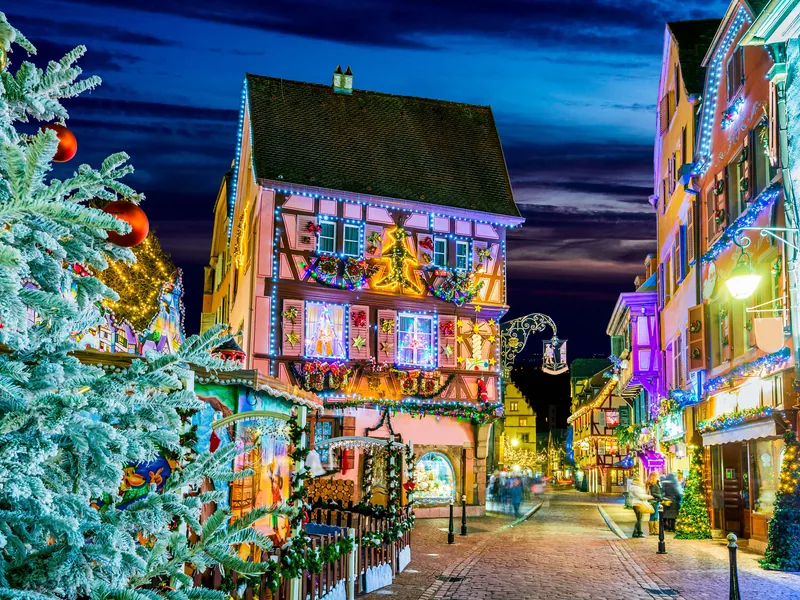
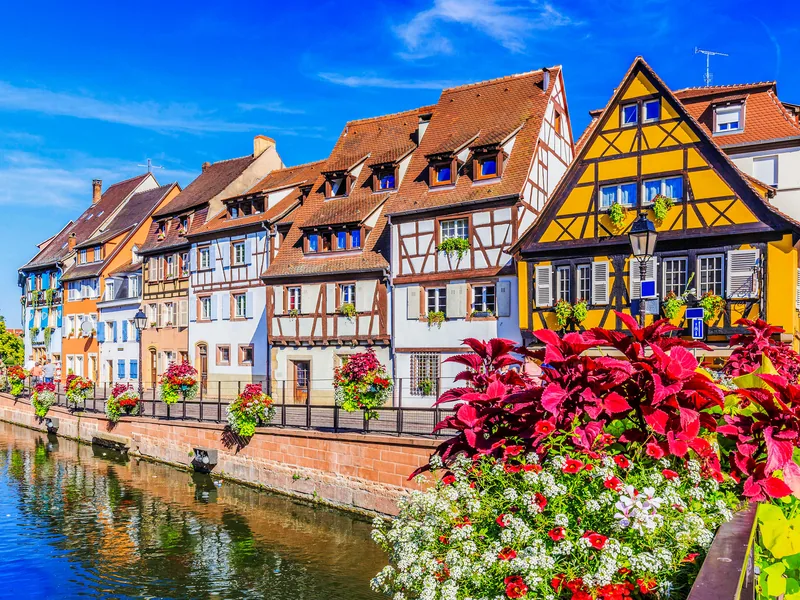
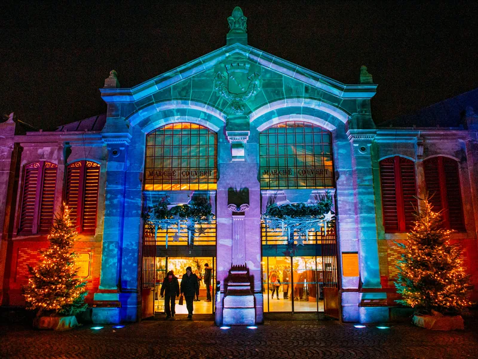
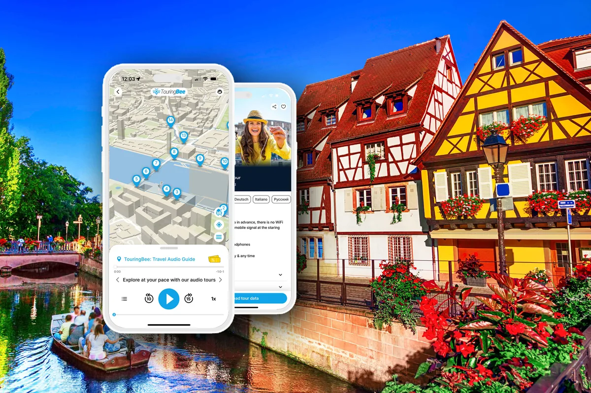

Seis mercados parece conversa de folheto turístico. Não é. Os mercados de Natal de Colmar são mesmo seis, todos diferentes, dentro de um centro histórico que se atravessa em quinze minutos: um vende foie gras, outro foi pensado para crianças de seis anos, outro é coberto e está cheio de gente que trabalha com as mãos.
A maioria dos visitantes vê dois deles, conclui que aquilo se resume a um chalé a vender o mesmo vinho quente de sempre e vai-se embora. O que faz diferença é saber de antemão para que serve cada praça.
A época do mercado de Natal de Colmar vai de 23 de novembro a 29 de dezembro de 2026 e a entrada é gratuita: paga o que come, bebe e leva para casa. Se quiser as histórias dos edifícios em frente aos quais os chalés estão montados, o nosso percurso áudio autoguiado percorre 27 paragens pelas mesmas ruas por 9,99 € e funciona offline, por isso não fica dependente de dados móveis no meio da multidão de dezembro.
Ainda a planear a viagem toda? Comece pelo nosso guia completo de Colmar e volte aqui para os pormenores dos mercados.

O essencial
| Datas 2026 | 23 de novembro – 29 de dezembro |
|---|---|
| Mercado gourmet e roda gigante | 23 de novembro de 2026 – 3 de janeiro de 2027 |
| Entrada | Gratuita nos seis |
| Horário seg.–qui. | 11:00–19:00 |
| Horário sex.–dom. | 10:00–20:00 |
| 24 de dezembro | 11:00–17:00 |
| 25–26 de dezembro | 10:00–20:00 |
| Tempo necessário | Meio dia para os seis, a pé |
| Centro histórico de carro | Fechado ao trânsito durante o horário dos mercados |
| De Paris | ~2h20 de TGV desde a Gare de l'Est |
| De Estrasburgo | ~30 minutos de comboio |
Os seis mercados, um a um
Os seis ficam perto uns dos outros: entre praças vizinhas costumam ser poucos minutos a pé. Eis para que serve cada um.
1. Place des Dominicains: o maior
Cerca de sessenta chalés encostados à parede de uma igreja dominicana do século XIV, iluminada de baixo para cima. É este o mercado que acaba nos postais e no rolo de fotografias de toda a gente.
O que se vende: decorações de Natal, enfeites de árvore, objetos para oferecer. A qualidade é desigual. Há vidro alsaciano genuíno e há também aquilo que se encontra em qualquer mercado europeu, de Viena a Lille. Olhe para a banca, não para o cenário.
É a iluminação que faz esta praça funcionar, por isso venha depois de escurecer. Às 11:00 o que se vê são barracas de madeira numa praça sem carros.
2. Place de l'Ancienne Douane: o que se faz à volta da fonte
Uns cinquenta chalés dispostos à volta da fonte Schwendi, com o Koïfhus por trás. A oferta é um pouco mais contemporânea do que na Place des Dominicains: criadores atuais lado a lado com as decorações tradicionais.
Esta praça é também a pausa natural. Há bancos, há espaço, e o edifício às suas costas é aquele onde se reunia a Décapole, a liga das dez cidades livres da Alsácia, e onde as mercadorias eram taxadas.
3. Place Jeanne d'Arc: o da comida e do vinho
Se quiser levar de Colmar alguma coisa que se coma, comece por aqui. A praça está montada como uma pequena aldeia alsaciana e nas bancas estão produtores da região: foie gras, enchidos, vinhos da Alsácia e eaux-de-vie (aguardentes de fruta). Não falta a doçaria da época: bredele, pain d'épices, kougelhopf.
É também a praça mais útil para quem vem comprar e não passear: compra diretamente a quem fez a peça.
4. Place des Six Montagnes Noires: o mercado das crianças
Lá em baixo, na La Petite Venise, e pensado de raiz para famílias. Animais vivos, um presépio mecânico, cavalinhos de carrossel, um marco de correio gigante para o Pai Natal e sumo de maçã quente para quem não bebe vinho.
Sem crianças, pode saltá-lo: quase tudo aqui é dirigido a famílias. Com crianças é ao contrário: guarde-o para o momento em que já ninguém aguenta mais chalés.

5. Marché Intérieur du Koïfhus: o que é coberto
Dentro do próprio Koïfhus, e fácil de passar ao lado, porque de fora não se parece nada com um mercado.
É o mercado do artesanato: ceramistas, oleiros, vidreiros, entalhadores, chapeleiros, ourives. Oficinas a sério, muitas vezes com o autor atrás da mesa. É também quente, seco e sossegado, o que numa tarde chuvosa de dezembro já vale por si.
É aqui que se entra quando as mãos deixam de responder e já ninguém se está a divertir. Vinte minutos lá dentro põem o dia outra vez em ordem.
6. Marché Gourmand: o de comer
Montado na Rue de la Montagne Verte, segue um calendário diferente dos outros cinco: de 23 de novembro a 3 de janeiro, todos os dias das 11:00 às 22:00, com fecho às 17:00 a 31 de dezembro.
Nove chalés, nove chefes de cozinha, das entradas às sobremesas, com demonstrações de cozinha ao início da noite em certas datas. Isto é jantar, não um petisco entre bancas; e, como se prolonga por janeiro, é a resposta ao clássico «viemos entre o Natal e o Ano Novo e está tudo fechado».
Os seis em resumo
| Mercado | Onde | Para que serve | Melhor altura |
|---|---|---|---|
| Place des Dominicains | Praça da igreja dominicana | Decorações, presentes, ~60 chalés | Depois de escurecer |
| Place de l'Ancienne Douane | Fonte Schwendi / Koïfhus | Moderno + tradicional, ~50 chalés | Fim de tarde |
| Place Jeanne d'Arc | Cenário de aldeia alsaciana | Comida, vinho, eaux-de-vie | A qualquer hora; compre aqui |
| Place des Six Montagnes Noires | La Petite Venise | Crianças, animais, presépio | De dia, com crianças |
| Marché Intérieur du Koïfhus | Dentro do Koïfhus | Artesanato, coberto | Quando chove |
| Marché Gourmand | Rue de la Montagne Verte | Comida quente, jantar à mesa, até 3 de jan. | À noite, com fome |
Qual dos mercados de Natal de Colmar vale a pena
Se tiver duas horas: Jeanne d'Arc para trazer alguma coisa de volta e Dominicains depois de escurecer. É o caminho mais curto para a Colmar que o trouxe cá.
Se tiver meio dia: acrescente o interior do Koïfhus e a Ancienne Douane, e acabe no Marché Gourmand para jantar.
Se vier com crianças: inverta tudo. Comece na Six Montagnes Noires ainda de dia, enquanto toda a gente está bem-disposta, e suba depois pelo centro histórico à medida que as luzes se acendem.
Se já cá esteve: procure o mercado coberto do Koïfhus. É o dos seis que mais facilmente escapa numa primeira visita.
Horários, multidões e quando ir mesmo
| Segunda a quinta | 11:00–19:00 |
|---|---|
| Sexta a domingo | 10:00–20:00 |
| 24 de dezembro | 11:00–17:00 |
| 25 e 26 de dezembro | 10:00–20:00 |
| Mercado gourmet | Todos os dias 11:00–22:00 (31 de dez. até às 17:00) |
A decisão que mais muda o seu dia é uma só: dia de semana ou fim de semana.
Os sábados de dezembro em Colmar são mesmo cheios: autocarros de excursão vindos da Alemanha e da Suíça, gente que vem passar o dia desde Estrasburgo e um centro fechado ao trânsito precisamente por ter demasiada gente lá dentro. Vai fazer fila para o vin chaud (vinho quente) e avançar a passo de caracol pela Place des Dominicains.
Uma terça ou uma quarta da mesma semana é outra coisa: os mesmos chalés e as mesmas luzes, mas bastante menos gente.
Se o fim de semana for a única hipótese, chegue às 10:00 e faça as compras antes do almoço. Em alternativa, venha mais tarde, já ao serão, quando parte dos grupos do dia se tiver ido embora. O meio do dia é o pior.
Mais uma nota sobre horários: no final de novembro e em dezembro as iluminações acendem-se ao anoitecer, por volta das 16:30. Ou seja, a Colmar que veio fotografar começa a meio da tarde, e os mercados ficam abertos mais três a quatro horas depois disso.
Como chegar, estacionamento e o centro sem carros
O centro histórico está fechado ao trânsito durante o horário dos mercados. Conte com isso em vez de ser apanhado de surpresa no local.
De comboio. Colmar fica na linha Paris–Estrasburgo–Basileia e a estação está a dez minutos a pé do primeiro mercado. De Estrasburgo são cerca de 30 minutos, com comboios regionais ao longo do dia; de Basileia, cerca de 45 minutos. Quem vem de Paris apanha o TGV direto na Gare de l'Est e demora cerca de 2h20; em dezembro, compensa reservar esse bilhete com antecedência.
De carro. Estacionamentos pagos no centro: Mairie, Rapp, Gare/Bleylé, St Josse e Lacarre, a maioria aberta das 07:00 às 21:00. Aos fins de semana há um Park & Ride no Parc des Expositions por 3 €, com transporte gratuito para o centro e de volta. Ao sábado é a opção sem stress e fica mais barata do que o centro.
Dormir por cá. Os quartos no centro histórico são reservados com muita antecedência para os fins de semana de dezembro, e os preços sobem bastante. Se quiser ficar no centro, não deixe a reserva para o fim; se já estiver perto da data, olhe para Eguisheim ou Turckheim e venha de comboio ou faça um curto trajeto de carro.
O que comer e beber
- Vin chaud — o vinho quente. Experimente a versão branca: na Alsácia é muito mais frequente do que nos mercados de Natal de outros sítios.
- Bredele — bolachinhas de Natal especiadas, vendidas a peso.
- Pain d'épices — o pão de especiarias alsaciano, denso e com mel.
- Tarte flambée (flammekueche) — massa fina, natas, cebola e toucinho. É o jantar de mercado mais óbvio.
- Choucroute — a couve fermentada com enchidos, para quando está frio e já andou o dia todo.
- Kougelhopf — o bolo levedado em forma de coroa; a versão salgada, com toucinho e nozes, é a que merece atenção a sério.
- Manele — os bonequinhos de brioche, coisa de dezembro, sobretudo para as crianças.
Se as aguardentes de fruta alsacianas lhe interessam, a Place Jeanne d'Arc é um bom sítio para as conhecer nas bancas dos próprios produtores: pera, ameixa (quetsche), mirabelle, kirsch.

Para além dos chalés
- As iluminações. Todo o centro histórico está iluminado ao longo de dezembro, e o efeito é melhor nas ruas estreitas entre as praças do que nas grandes praças.
- A pista de gelo na Place Rapp, rodeada de árvores cobertas de neve e de chalés.
- A roda gigante, que segue o calendário do mercado gourmet e fica até 3 de janeiro.
- Os passeios de barco na La Petite Venise, com coros de crianças a cantar a bordo em algumas noites.
- O Musée Unterlinden. Se quiser juntar um museu aos mercados, é este o primeiro candidato: guarda o retábulo de Isenheim. 14 €, aberto de quarta a segunda das 09:00 às 18:00, encerrado às terças, última entrada às 17:30. Em dezembro, compre o bilhete com antecedência.
Erros a evitar
Tratar tudo como um só mercado. Fazer «o mercado de Natal de Colmar» costuma significar ver a Place des Dominicains e ir embora. É um dos seis.
Vir num sábado de dezembro sem plano. É o dia com mais gente do mês com mais gente, numa cidade construída para muito menos.
Chegar às 11:00 à espera das luzes. As fotografias que o fizeram vir foram tiradas depois de anoitecer.
Comprar o primeiro enfeite que vê. A oferta e os preços variam de praça para praça, e no Koïfhus há mais peças feitas pelos próprios autores.
Chegar sem dinheiro vivo. Muitos chalés aceitam cartão; os que não aceitam são suficientes para lhe fazerem perder uma compra.
Vestir-se para andar em vez de estar parado. Vai passar horas parado numa cidade ribeirinha, fria e húmida. Isso não é o mesmo que uma caminhada ao frio.
Saltar o Koïfhus por não parecer um mercado. É o melhor dos seis para artesanato e o único com telhado.
Planear só Colmar. Eguisheim, Riquewihr, Kaysersberg e Turckheim têm os seus próprios mercados a vinte minutos daqui, com datas próprias.
O audioguia

Percurso a pé pelo centro histórico de Colmar
9,99 € · pagamento único, sem subscrição
- 27 paragens, com o percurso e as histórias preparados por autores profissionais
- 100% offline depois de descarregado: não precisa de dados móveis no centro histórico cheio de gente
- Mapa GPS offline que mostra onde está; cada faixa é iniciada por si, ao chegar à paragem
- Áudio em inglês, francês, alemão, italiano e polaco (não existe versão em português)
- iOS e Android · 1 ano de acesso
- Cerca de hora e meia, inteiramente ao seu ritmo
O percurso passa pelas praças onde os mercados se montam, por isso em dezembro tem as duas coisas ao mesmo tempo: porque é que o Koïfhus era importante, quem foi Schwendi e o que tem na mão, que casa de Colmar está associada ao universo visual do Studio Ghibli e o que significa realmente a Estrela de David na cervejaria.
Perguntas frequentes
Quando é o mercado de Natal de Colmar em 2026?
De 23 de novembro a 29 de dezembro de 2026, para cinco dos seis mercados. O Marché Gourmand dura mais tempo: de 23 de novembro a 3 de janeiro de 2027.
Quanto custa a entrada?
Nada. Os seis mercados têm entrada livre; só paga o que comprar.
Qual é o horário?
De segunda a quinta das 11:00 às 19:00 e de sexta a domingo das 10:00 às 20:00. A 24 de dezembro fecham mais cedo, às 17:00, e a 25 e 26 de dezembro funcionam das 10:00 às 20:00. O Marché Gourmand abre todos os dias das 11:00 às 22:00 e fecha às 17:00 a 31 de dezembro.
O mercado de Natal de Colmar está aberto no dia de Natal?
Sim. Em 2026 os mercados abrem a 25 e 26 de dezembro, das 10:00 às 20:00.
Qual é o melhor mercado de Natal de Colmar?
Depende do que procura: Dominicains pelo cenário, Jeanne d'Arc pela comida e pelo vinho, o interior do Koïfhus pelo artesanato. Estes três são o essencial.
De quanto tempo preciso?
Meio dia chega para ver os seis a pé. Um dia inteiro permite juntar o Unterlinden e um jantar sem pressas no Marché Gourmand.
Dá para vir de Estrasburgo só por um dia?
Facilmente. São cerca de trinta minutos de comboio em cada sentido, e os mercados de Colmar estão suficientemente juntos para uma tarde e uma noite chegarem.
Colmar é melhor do que Estrasburgo para mercados de Natal?
Colmar é mais compacta: os seis locais fazem-se a pé em meio dia, sem esforço. O mercado de Natal de Estrasburgo é bastante maior e está espalhado por uma área mais vasta.
Continuar a explorar
- O guia completo de Colmar — o guia principal: centro histórico, Petite Venise, Unterlinden e quanto custa um dia.
- O percurso áudio de 27 paragens — as mesmas praças, com as histórias.
- Todos os guias — tudo o que já publicámos.
Antes de ir
Colmar em dezembro é mesmo boa e está mesmo cheia. Uma coisa não anula a outra; significa apenas que o dia compensa um pouco de planeamento. Escolha um dia de semana. Comece na Jeanne d'Arc. Esteja na Place des Dominicains quando as luzes se acenderem. Coma na Montagne Verte. Guarde o Koïfhus para a chuva.
Por trás dos chalés estão casas com vários séculos. Se quiser perceber o que está a ver entre um vinho quente e outro mercado, o nosso percurso pelo centro histórico tem 27 paragens, cerca de hora e meia, e funciona inteiramente offline.
Percorra Colmar com as histórias no ouvido
27 paragens, hora e meia, ao seu ritmo. Pagamento único, funciona offline, é seu durante um ano.
Alguns links desta página são links de afiliado para a Tiqets, a GetYourGuide, a Booking.com e a SNCF. Se reservar através deles, podemos receber uma comissão sem custo adicional para si. O audioguia da TouringBee é produto nosso. Consulte a nossa Divulgação de Afiliação.